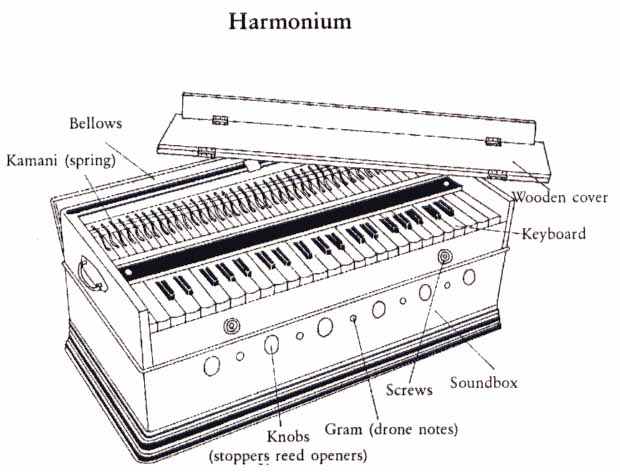

The most widely-known and used free-reed aerophone in India is the harmonium and have been imported from the West. No foreign instrument, however, has caused such a commotion as the harmonium and none is used so extensively, be it in classical, light, film or folk music. It is probably the most commonly used instrument in northern India.
The harmonium was brought to India either by Western traders or by religious missionaries and musicians in the late nineteenth century. Most probably it was first introduced to Indian music in Calcutta, and from there it spread all over the country. In India today, harmonium finds a place in music of all kinds, whether it is folk, light, semiclassical or even highly-reputed classical music.
The Indian harmonium is not the heavy and big pedal instrument of Europe, but has been reduced to a small portable box, which is approximately two feet by one foot and about nine to ten inches high, the back of which opens to act as the bellows. On the top is a keyboard like that of a piano, but with a much smaller range, usually of about three octaves. This is played by one hand, while the other works the bellows. It consists of a set of free reeds, whose length determines their pitch, activated by a wind supply from hand-operated compression bellows and controlled by a keyboard. The reed is responsible for the tone and pitch, whereas the air bellows, with all its attached valvular mechanisms, produce and control the passing air, and are responsible for the volume of the instrument. The reeds, one for each note, are fixed at one end and are kept free at the other. When the bellows are compressed, the air passes under the reed vibrating it, thus producing the desired pitch. However, the whole process is controlled by a keyboard that makes it a very simple and hassle-free instrument.
